Index
Presenters
#000001
#000002
#000003
#000004
#special
|
#000003
Dorkbot Mountain
People doing strange things with electricity
People doing strange things with software
People doing strange things with mountains
[ Day 1 / Saturday, 17th December 2005 ]
Kazuhiro Jo/ Monalisa-Audio Unit
Jo Kozuhiro [of Sine Wave Orchestra fame], presented a project on which he and take3tsu n. nagano are currrently working on: the Monalisa-Audio Unit.
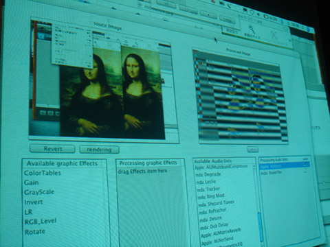The Monalisa-Audio Unit is an Mac OSX software component, which allows you to process audio with image filters in realtime. It is basically a wrapper for Core Image filters into a Audio Unit, and therefore all the image filter can be used as filters for audio. Consequently, the sound computation in the Monalisa-Audio Unit is entirely done by the Graphic Processor (GPU), thus opening the possibility for computation-heavy real-time audio processing. The software is written entirely in Objective-C and needs the Core Image Framework of Apple's OSX 10.4.3 or later and works with application, that make use of this Framework, like Apple's Garageband or AUlab.
Besides the obvious synaestethic pleasures derived from creating audio and video from the same data, it was interesting to see the ease and elegance of the project. This program might be a small step, but it open immense possibilities of audio-image transcoding. One could imagine for example video filters, which are specially designed to perform audio computation; but how would an image with this filter applied to look like?
But why the name Monalisa? What has the famous painting to do with audio/image processing? Of course Jo was prepared for this kind of question and he answered it by a very elloquently demonstration: by placing two copies of the Mona Lisa painting next to each other, one notices that the landscape behind the portrait forms an infinite succession; the left edge of the picture fits perfectly to its right edge (and of course vice versa). Just like the transformation from audio to image (and of course back).
=>Monalisa Main Site
=>English Download
Jo was also so kind to perform live with Reisiu and her wonderful voice.
Takuya Hoshi
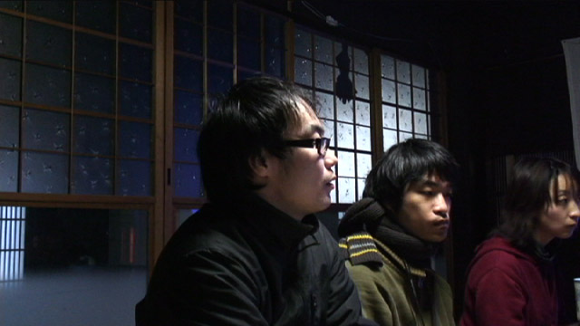Hoshi was talking about his recent project, a system to classify all of net.art according to the nettime mailing. His project is still at a very early stage, but already looks very promising.... More to come.
Soichiro Mihara / C.I.P. Composition in Progress
Mihara Soichiro presented his sound installation 'Composition in Progress', on which he is working on with collaborator Yuko Mohri's since 2003. The 'Media and Art' festival Transmediale liked the piece so much, that it was awared the second prize at the Transmedial06 competition. From their statement:
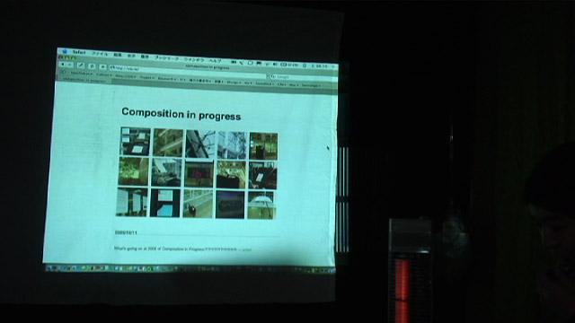"Vexations" is a piano piece which was composed by Erik Satie in 1895. Its theme consists of just one line and includes two variations of it. The author left a mysterious note under the original in which he invites to play the theme 840 times in series.
From this starting point the artists developed an installation which focuses on the characteristics of sound in physical space and on computer recording and reproducing systems. For "Vexations - Composition in Progress" the original theme was at first played on the oldest piano in Japan in order to obtain an initial record. A computer then records the sound of the piano together with the sounds produced in the room as well as the voices of the visitors. The data are stored in the computer as digital files, converted into midi files and after that played again by the computer. The conventions of the computer and the sounds of the exhibition room thus alter the original theme of "Vexations" as they generate endless variations of the piece."
=>Composition In Progress
Reisiu Sakai
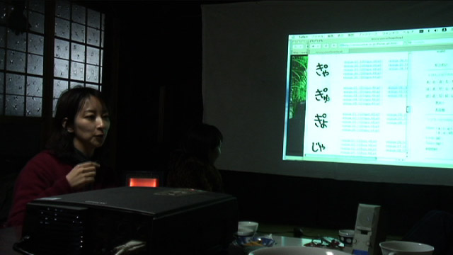Reisiu is an media artist and a classically trained singer with an incredile and exceptional voice. She presented several of her newest work and collaborations, all of which can also be seen and heard at her website. [But it won't be anything the real thing] Unfortunalty the low quality of (my) recording does not justify her voice in the slightest way, so please make sure to listen to her live. It was quite amazing to have the rather old Austrian Atelier being filling up with near perfect human sine waves.... Very hard to desribe, very breath-taking to listen.
=>website
[ [ [ I N T E R L U D E ] ] ]
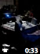Noise Voice
Reisiu was also so kind to participate in an impromptu-improvisation with Jo and his Monalisa. Some results of this Noise-Voice collaboration are here, sorry for the low quality of video and audio.
[ [ [ E N D - I N T E R L U D E - E N D ] ] ]
Takao Nishizawa
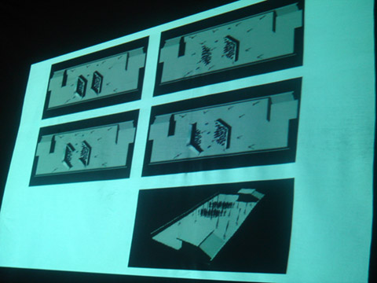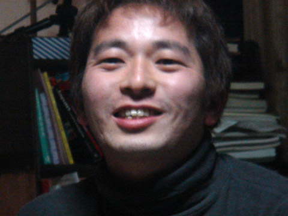Nishizawa Takao was showing exampling of his work he realised as part of the groups 'buildinglandscape' and 'responisive environment'. He displayed a strong interest in 'Soft Architecture', in the softening of the hard spaces. He showed large scale multimedia installation of his work, quite impressive.
=>buildinglandscape
=>responisive environment
[ Day 2 / Sunday, 18th December 2005 ]
Noriyuki Fujimura
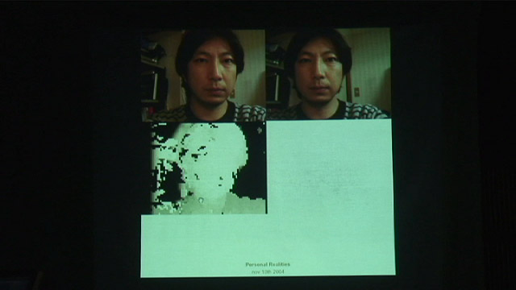Fujimura Noriyuki was presenting some of his interactive art works. Nori is very interested in the idea of creating a platform for starting acts communication. Amongst the works he was showing was World / World.
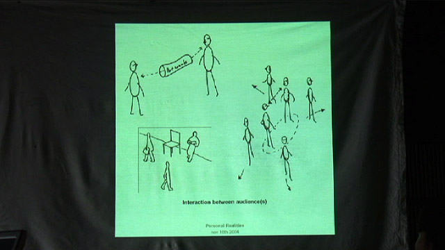A communication device, based on the idea of a 'long imaginal bar' stuck through the earth. By pushing it in on the one side, it comes out on the other, and the other way round. His Remote Furniture works on a similar principle, only this times the objects are rocking chairs. Interesting to note, that they seem to stimulate communication best, when they are not on the other side of the planet, but next to each other.
We also tried to 'Find a flow of information through our bodies'. This is a kind of 'chinese whispers' ('stille Post', 'silent post') game, but instead of sentences, the tactile information of somebody drawing on your back is passed on. Drawing has the advantage, that in the end you have a visual trail, some graduations of the change, that occured from the beginning to the end. It really sounds exiting, but unfortunatly the rather cold climate in the house made it necessary to wrap ourselves in everything that was available, therefore making our backs not really very sensitive to the drawing. The results were rather simple, but nevertheless quite funny and interesting.
=>website
Christian Zemsauer / Murmel Comics
Christian Zemsauer is the current representative of Murmel Comics in Japan. Murmel (-> marble, -> marvel) Comics are low-tech highliy original comics published serveral times a year, each issue centerting around a certain topic. So what are Murmel Comics? Best explained in their own words:
"Murmel Comics are comics for everybody. Since 1999 the Murmel Comics anthologies have been published three times a year. Each issue includes stories in pictures. Drawing skills do not matter, because nobody who wants to draw or tell something shall be excluded. There is neither a "too good" nor a "too bad". Murmel confronts quality terror with an open, participatory system..."
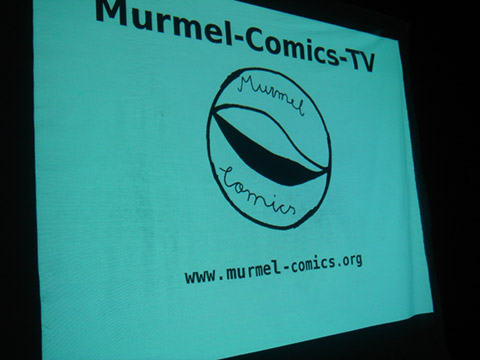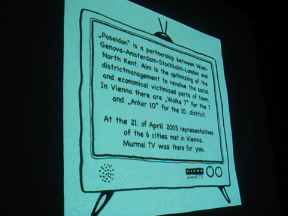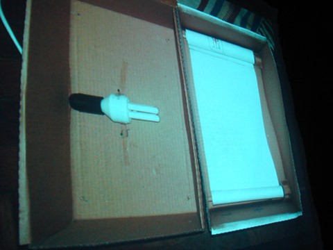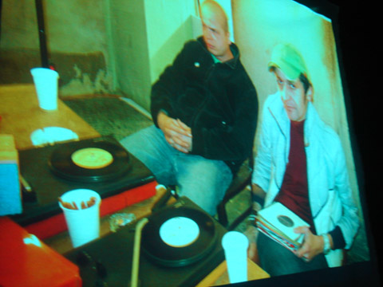
He also showed some pictures of the Murmel Comics TV, an ultra low-tech tele-vision device (see the picture above), which is basically a light-pulp inside a box. The comics are displayed on the outside, scrolling very nicely to creaty a perfect illusion of seamless motion in high definition.
Christian is currently the only distributer of Murmel Comics in Japan, but of course you can also order the comics and some very nice T-Shirts directly from their website.
=>Murmel Comics
Hiroko Mugibayashi / MOIDS
Hiroko was talking about her impressive range of activities and her rather unconvential carreer in the field of media. In the mid-90 she founded the digital division of avex, which grew rapidly and quickly to over 150 people. She was showing some very nice works, which she made there. Currently Hiroko is concentrating on sound works in collaboration with Soichiro Michara (from CIP) and Kazuki Saita (from the ingineuos Breadboard Band) called MOIDS:Mechanical Darwinism.Morphogenetic Sound. Hiroko will be showing MOIDS at at the IAMAS Graduate Exhibition at End of February.
=>website
Yosuke Kawamura / Mobium
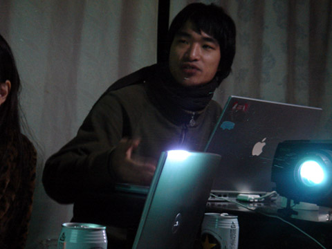Kawamura Yosuke is the director, curator and driver of the mobile museum or 'Mobium', a bus turned into a drivable gallery. Lozi was showing was he and the Mobium was up to in the last couple of mounth. In October 2005, Mobium was hosting the Moblab, 'the a japanese-german media camp'. A group of german and japanese artists were travelling together travel across Japan in the Mobium, producing work along the way. They also attempted to come to the Austrian Atelier in Fujino, 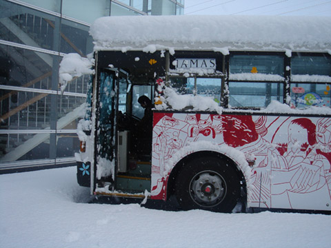but untfortunatly the roads in Fujino are rather narrow and steep and not really build for a large bus such as the Mobium.
The last picture shows how we found the Mobium back in Ogaki. Quite a lot of snow for one night...
=>website
Text by Georg Tremmel
#000003
Date: 2005.12.17 & 18
Venue: Austrian Atelier in Fujino
Presentations:
[ Day 1 ]
Kazuhiro Jo
Takuya Hoshi
Soichiro Mihara
Reisiu Sakai
Takao Nishizawa
[ Day 2 ]
Noriyuki Fujimura
Christian Zemsauer
Hiroko Mugibayashi
Yosuke Kawamura
Cooperation: Austrian Embassy in Japan
Guest Coordinators: Georg Tremmel & Shiho Fukuhara
Realtime and Non-Realtime Translation: Shiho Fukuhara
Logistics: Yosuke Kawamura
Special Thanks: to the students from Tama University for being extremely determined to attend.
| |